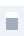

01
Fleet awareness
One watch feed across local and remote sessions. Blocked, done, and ambient prompts—tagged by pane and risk.
Voice · agent fleet · Herdr ≥ 0.7.1
When your agents need a word.
Supervise the whole herd by voice. When agents in Herdr block, swarm, or wait on you, Hark speaks the ask and takes your answer out loud—so the fleet keeps moving while you’re away from the keyboard.
Voice path · herd topology
Hark, the herald agents sing: “Input, please, O human king!” Blocked in Herdr, questions rise; Hark relays your voice replies.
Why Hark
A swarm in Herdr will pause on lockfiles, menus, and permissions. You can’t babysit every pane. Hark is the handsfree control plane: listen when the fleet needs you, speak once, deliver to the right target.
One watch feed across local and remote sessions. Blocked, done, and ambient prompts—tagged by pane and risk.
Agents speak the question; you answer out loud. Mic mutes while Hark talks, then opens when you do—no clicking into panes.
Fingerprint + revision refuse stale panes. Risky actions always confirm. The LLM never invents the delivery target.
Usage
You don’t wire the voice loop by hand. Point a capable coding agent at this repo, invoke the hark (or handsfree) skill, and let it arm watch, speech, and safety. You stay on voice.
ultradyn/hark.
/hark or /handsfree (or load skill/hark/SKILL.md).
Orchestrators
Handsfree voice expects a coding CLI/agent that can run shell tools and keep a long-lived
Monitor (or equivalent) on
hark watch --for-monitor. Without that, blocks won’t interrupt the session.

OpenCode| CLI / agent | Support | Notes |
|---|---|---|
| Claude Code | Native / Monitor | Skill + Monitor on watch feed; full handsfree loop |
| Grok Build | Native / Monitor | Same pattern; skill install + persistent monitor |
| Antigravity | Native / AgentAPI | Google Antigravity CLI; long-lived feed via agentapi inject |
| Pi | Plugin |
Any plugin that keeps a long-lived Monitor on
hark monitor works. Example:
pi-monitor
(pi install npm:pi-monitor) — watches background
processes and delivers matching output into the session.
|
| OpenCode | Plugin |
Any plugin that keeps a long-lived Monitor on
hark monitor works. Example:
opencode-monitor-bg
(monitor_start / monitor_fetch) —
runs background processes and delivers their output back into
the owning session.
|
| Codex / others | If Monitor exists | Any agent with shell + long-lived watch can drive Hark |
Herdr hosts the worker agents. Your orchestrator (outside Herdr) runs the skill and speaks for the fleet.
The loop
Hark keeps the orchestrator outside Herdr: local mic, speakers, and a skill that never invents your answers.
Monitor line with event_id, pane, risk.
hark tts --listen or hark ask—mic mutes while Eve talks.
Speech-gated capture; start cue only when you speak.
hark answer <event_id> with stale-safe checks.
Safety first
Pane text is untrusted. Humans stay in the loop. Permissions and destructive actions always require confirmation.
Install
/hark.
The installer puts the hark CLI on your PATH and copies skills to
~/.claude/skills. Prefer letting the agent run doctor and start handsfree after
/hark. Ambient wake: say hey hark, hey herald, or your custom trigger.
When the herd calls
Fleet control by voice—human in the loop, hands off the keyboard.